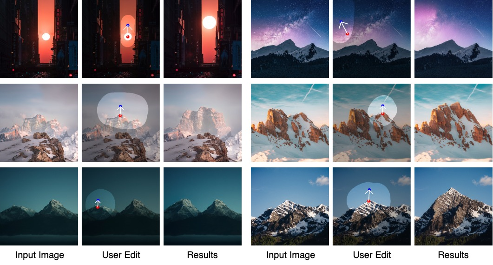

for Interactive Point-based Image Editing
Our DragDiffusion enables "drag" editing for diffusion models. Given an input image, the user clicks handle points (red), target points (blue) and draw a mask specifying editable region (brighter areas).
Abstract
Precise and controllable image editing is a challenging task that has attracted significant attention. Recently, DragGAN enables an interactive point-based image editing framework and achieves impressive editing results with pixel-level precision. However, since this method is based on generative adversarial networks (GAN), its generality is upper-bounded by the capacity of the pre-trained GAN models. In this work, we extend such an editing framework to diffusion models and propose DragDiffusion. By leveraging large-scale pretrained diffusion models, we greatly improve the applicability of interactive point-based editing in real world scenarios. While most existing diffusion-based image editing methods work on text embeddings, DragDiffusion optimizes the diffusion latent to achieve precise spatial control. Although diffusion models generate images in an iterative manner, we empirically show that optimizing diffusion latent at one single step suffices to generate coherent results, enabling DragDiffusion to complete high-quality editing efficiently. Extensive experiments across a wide range of challenging cases (e.g., multi-objects, diverse object categories, various styles, etc.) demonstrate the versatility and generality of DragDiffusion.
Method Overview
Overview of DragDiffusion. As shown in part (A), we first finetune a LoRA on parameters of the UNet to reconstruct the user input image before editing. Next, part (B) illustrates the detailed editing process. Specifically, we first apply a DDIM inversion on the input image and obtain the latent at a certain time step. Then, based on the user editing instructions (i.e., handle points, target points, and mask), we optimize the inverted latent to supervise handle points to move to target points. Finally, DDIM denoising is applied on the optimized latent to obtain the final editing result.
Editing Trajectories


Results
General objects
Arts

Animals
Scenes
Paper
DragDiffusion: Harnessing Diffusion Models for Interactive Point-based Image Editing
Yujun Shi, Chuhui Xue, Jiachun Pan, Wenqing Zhang, Vincent Y. F. Tan, Song Bai
arXiv, 2023.
@InProceedings{shi2023dragdiffusion,
title = {DragDiffusion: Harnessing Diffusion Models for Interactive Point-based Image Editing},
author = {Yujun Shi, Chuhui Xue, Jiachun Pan, Wenqing Zhang, Vincent Y. F. Tan, Song Bai},
booktitle = {arXiv preprint arXiv:2306.14435},
year = {2023},
}
Acknowledgements
This template was originally made by Phillip Isola and Richard Zhang for a colorful project, and inherits the modifications made by Jason Zhang and Elliott Wu.